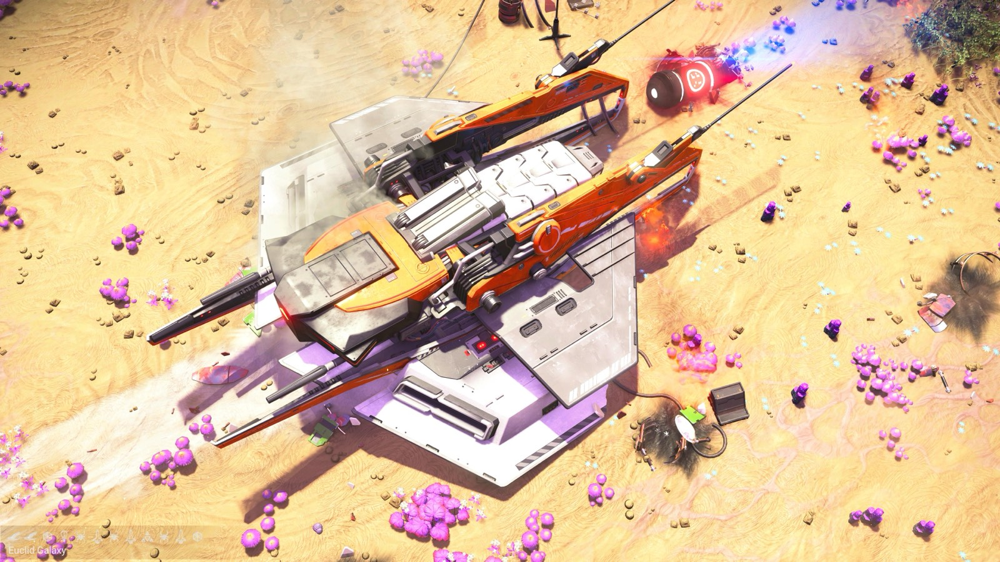
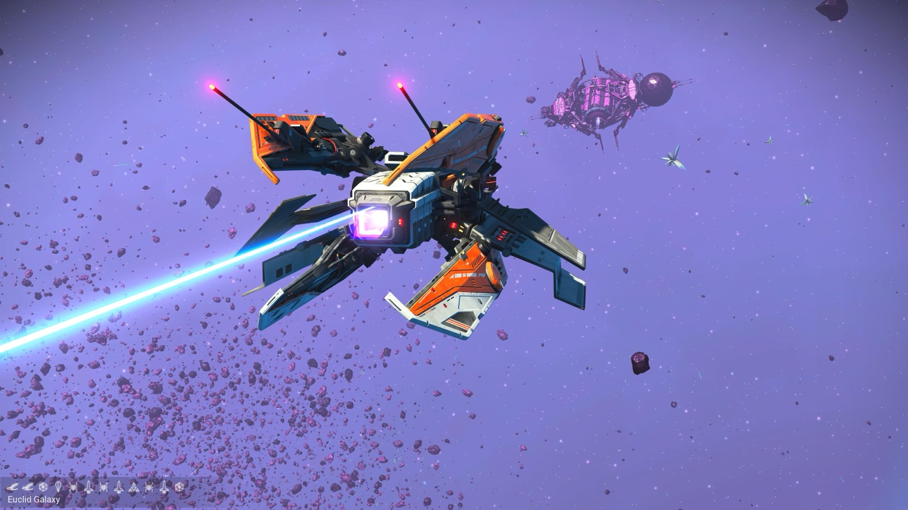
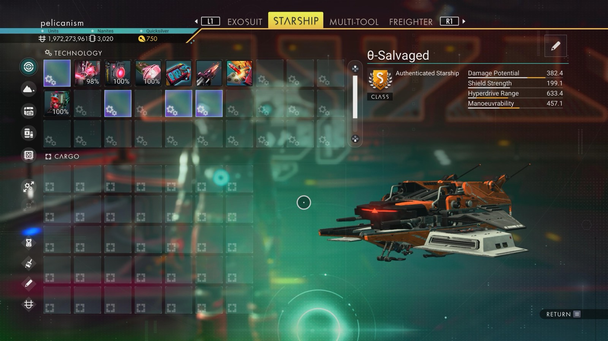

Waypoint 9
Besanour



- Distance from core
- 1,139,607 LY
- Jump from previous
- 1,862 LY
- Planet coordinates
- +39.13, +36.75
- Ship as found
- B-class, 35+24 slots
- S-class ship
- θ-Salvaged
- Damage
- 382.4
- Shield
- 199.1
- Hyperdrive
- 633.4
- Manoeuvrability
- 457.1